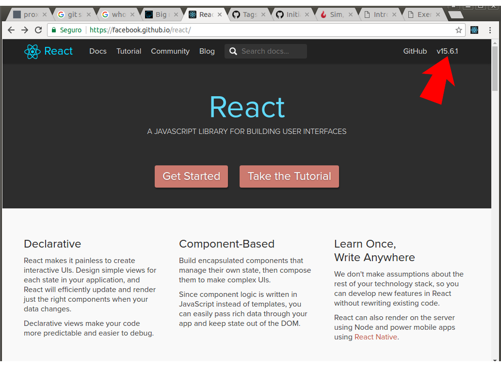
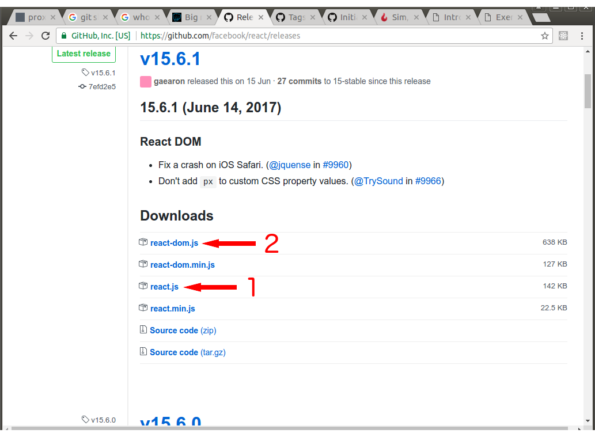

React.JS
- Biblioteca em JavaScript para construção de UI
- Coesa - única responsabilidade é cuidar da UI
- Amadurecida, versão atual v15.6.1, primeiro
release feito em 29/Mai/2013 - Permite criar componentes visuais ricos
- Documentação, tutoriais, exemplos, vídeos
no site www.reactjs.com
Tem projetos grandes usando?
- Netflix, Facebook, Instagram
- WhatsApp Web, Dropbox, Atlassian
- Uber, Yahoo! Mail, KhanAcademy
- Amazon AWS e outros
Qual será a abordagem deste talk?
Introdutória e elementar...
Agenda
- Instalação e uso
- Virtual DOM
- Componente
- JSX
- Webpack
- Agradecimentos
Instalação e uso
Entrar na página do React

Clicar no link para o repositório
Salvar react.js e react-dom.js no teu projeto
Exemplo 1
O que veremos?
- Baixar arquivos da React
- Como usar no projeto
- Olá Mundo!
Exemplo 2
O que veremos?
- Objeto React (elementos e componentes)
- Objeto ReactDOM (interage com o DOM)
Que problemas nós vimos?
- Lógica dentro do index.html
- Cadê a reutilização??
- Tem muito código!!
Virtual DOM
- É um objeto JavaScript contendo uma
representação do DOM real - Faz diffing e patching: identifica as mudanças realizadas e as aplica no DOM
- Utiliza eventos sintéticos
- Rapidez na renderização do DOM
Exemplo 3
O que veremos?
- O custo de manipular o DOM diretamente
- Como o uso do vDOM se sai?
Que problemas nós vimos?
- Alterar o DOM = DOOM
Componente
O propósito do React
- Componentes ricos
- Atributos e controle de estado
Propriedades class e for
- Palavras reservadas em JS: vDOM é um objeto
- Usar className e htmlFor
Propriedade style
- Tem que ser um objeto e não uma string
- Por que não uma string como no HTML?
- Por performance e simplicidade!
- Dispensa o parsing da string
Exemplo 3
O que veremos?
- Extrair código reutilizável para arquivo
- Uso de propriedades (argumentos)
- Uso de htmlFor e style
- Uso de className (css inline nunca!)
Que problemas nós vimos?
- Ainda tem código no index.html
- Ainda com muito código (boilerplate)
- Não favorece o trabalho de UI
- Fortemente acoplado ao DOM
- Não é coeso: renderiza sempre
em FORMs diferentes
Controlando o estado dos componentes
...
- ...
- ...
Exemplo 4
O que veremos?
- value VS defaultValue
- O uso de this.propTypes
- O uso de this.state
Que problemas nós vimos?
- Ainda tem muito código (boilerplate)
- Ainda não favorece o trabalho de UI
- Sempre define um FORM (desde Ex. 2)
Métodos de ciclo de vida
Exemplo 5
O que veremos?
- componentWillMount()
- componentDidMount()
- componentWillUpdate()
- componentDidUpdate()
- shouldComponentUpdate()
Que problemas nós vimos?
JSX - Feio, mas nen tanto...
- É preprocessado e transformado em JS
- Préprocessamento ocorre no deploy
- Browser roda JS
- Menos verboso que React.createClass
- Favorece o design da UI (ressalvas)
Exemplo 6 - Olá Mundo (by JSX)
O que veremos?
- Código JSX
Que problemas nós vimos?
- Mistura código JS com "html"
- Porém, frescura-free!!
- Alguém percebeu um outro problema? (dev/prod)
Exemplo 7
O que veremos?
- JS dentro do JSX com {...}
- Eventos
- onChange (simplicidade no tratamento de digitação: sem depender de keyUp() etc.
- TEXTAREA e SELECT (value e default)
Que problemas nós vimos?
Exemplo 8 - validador de cpf (versão JSX)
O que veremos?
- Favorecer reutilização (tirar o FORM)
Que problemas nós vimos?
Exemplo
O que veremos?
Que problemas nós vimos?
Exemplo
O que veremos?
Que problemas nós vimos?
Exemplo
O que veremos?
Que problemas nós vimos?
Exemplo
O que veremos?
Que problemas nós vimos?
Exemplo
O que veremos?
Que problemas nós vimos?
Slide 2
var f1 = function(name) {
return {
name: name,
getName: function() {return this.name;}
}
};